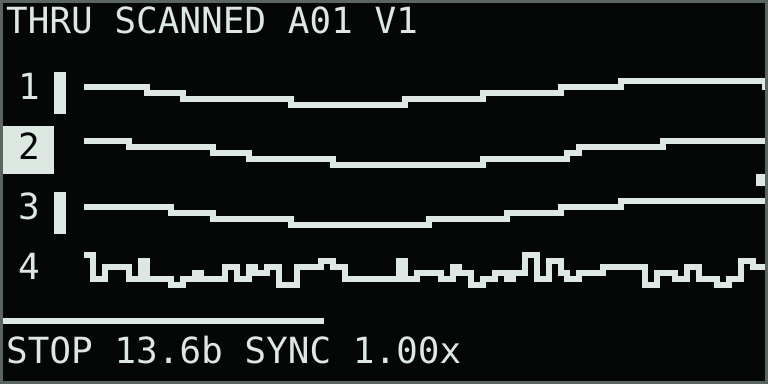
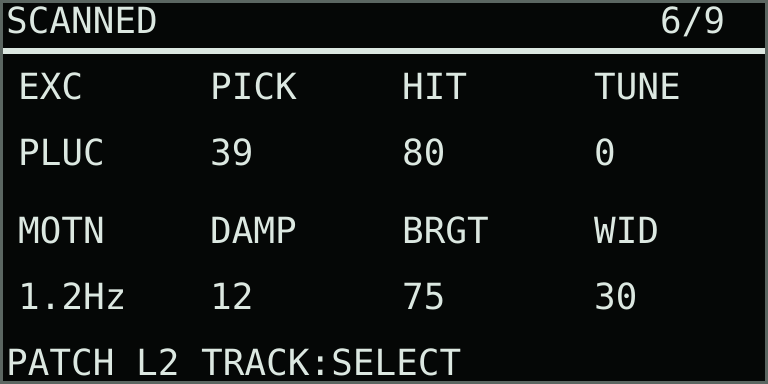
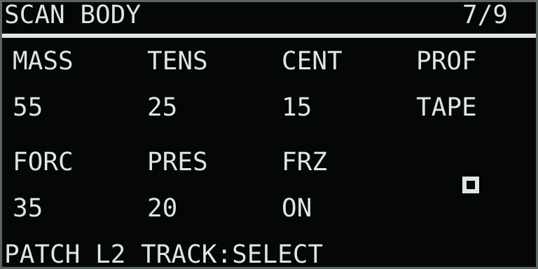
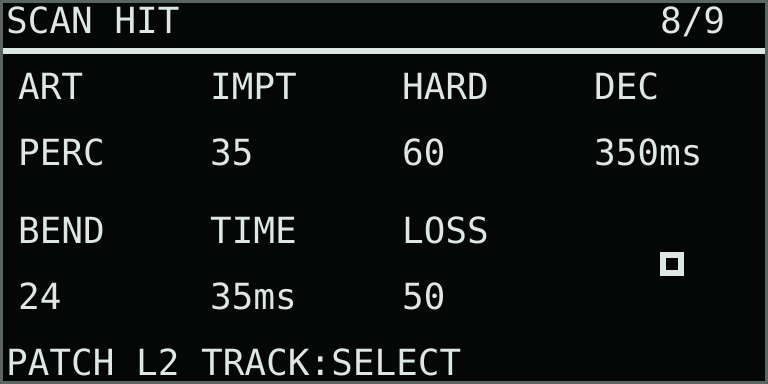
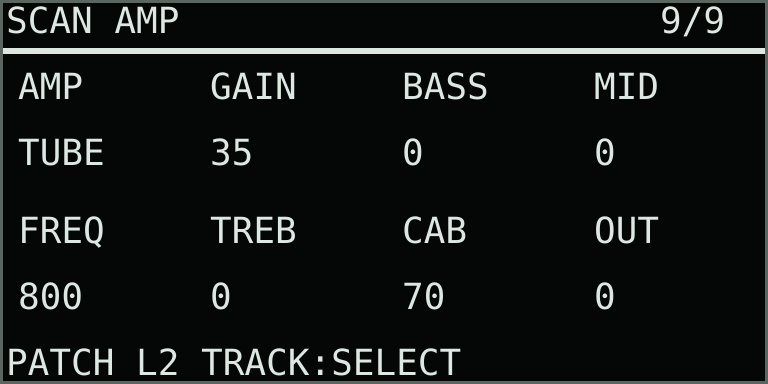

Playback engine 17 of 22
SCANNED
A slowly moving virtual string becomes the waveform of a pitched instrument. Pluck or strike it for ringing tones, apply continuous force for sustained motion, or freeze a shape while the note keeps sounding.
Play four physical patches
Select SCANNED with ALG. A sample is optional. Each Track selects one of four physical patches for editing. Keyboard notes set the audio pitch; MOTN sets how quickly the string itself moves. Stack RATE still moves between patches. These three speeds are independent.
Single and Layers have eight voices scanning four patches. Split assigns two patches and four voices to each part. Shared Dual gives A and B independent four-patch programs. Quad and Sequence use one patch and two voices per lane without stack scanning. Bank keeps the four-patch instrument on A and the sample pads on B.
Use the existing Amp Envelope to shape each note. Mono/Legato, scales, latch, Engine List, clips, mixer and effects keep their usual roles. Each note has its own four moving strings; returning to a patch follows that note’s continuing physical motion rather than restarting the patch.
String display

The highlighted lane number identifies the patch being edited. Small markers show each note’s stack blend. In Shared Dual the display follows the focused part. FRZ freezes string motion; Loop still pauses stack scanning. They can be used independently.
Parameter pages
Knobs 1–4 form the top row; 5–8 the bottom row. All four pages edit the selected Track’s patch. Unused cells show a square: PICK is for Pluck/Strike in Tone, and all hammer excitations in Perc; MASS and TENS need a non-Even profile; SEED is used by Random profiles, Noise excitation or a Perc impact. TIME is available when BEND is nonzero.
SCANNED

| Knob | Display | Range | What it controls |
|---|---|---|---|
| 1 | EXC | PLUCK / STRIKE / NOISE / SAMPLE | Excitation. Excitation at note onset: plucked displacement, a velocity strike, noise displacement, or the selected lane’s sample. With no sample, SAMPLE falls back to a pluck. Changing EXC affects the next note. In PERC, Strike adds velocity to an immediately audible localized displacement. |
| 2 | PICK | 1–99 | Excitation Position. Position along the virtual string where a pluck or strike is formed. Shapes the initial spectrum; applies to the next note. |
| 3 | HIT | 0–100 | Initial Energy. Initial displacement or strike energy. Applies to the next note; use the shared output level for live gain changes. |
| 4 | TUNE | -48–48 | Transpose. Transpose relative to the played note, in semitones. Does not change mechanical motion speed. |
| 5 | MOTN | 0.05–6 | Mechanical Motion. Mechanical evolution rate in Hz. Logarithmic dial spacing gives finer control at slow speeds. This is not stack scanning or note pitch. |
| 6 | DAMP | 0–100 | Mechanical Damping. Energy loss in the physical string. Higher values settle more quickly. Continuous force can sustain motion. |
| 7 | BRGT | 0–100 | Readout Brightness. Brightness of the audio readout. Higher notes automatically use fewer harmonics to reduce aliasing. |
| 8 | WID | 0–100 | Stereo Width. Offset between left and right reading positions. Zero gives mono; larger values widen the image without detuning the note. |
SCAN BODY

| Knob | Display | Range | What it controls |
|---|---|---|---|
| 1 | MASS | 0–100 | Mass Variation. Variation in node masses according to PROF. Creates uneven movement and richer changing shapes. |
| 2 | TENS | 0–100 | Spring Variation. Variation in the connecting spring strengths according to PROF. Works independently of MOTN. |
| 3 | CENT | 0–100 | Centering Springs. Spring force pulling individual nodes toward their resting positions. Changes the shape and balance of the motion. |
| 4 | PROF | EVEN / TAPER / WAVE / RANDOM | Physical Profile. Distribution used by mass, tension and centering: even, tapered, a wave profile, or seeded random. |
| 5 | FORC | 0–100 | Continuous Force. Continuous moving force. Increase for sustained evolving tones rather than a decaying pluck. |
| 6 | PRES | 0–100 | Pressure Force Depth. Extra continuous force from pressure on a held note or MIDI pressure. For Move pads, pressure must be enabled on Pads & Scale; its selected performance role also remains active. |
| 7 | FRZ | OFF / ON | Freeze Motion. Freeze mechanical motion at its current shape. The note keeps its pitch and envelope, and stack scanning can continue. OFF resumes from the held state. |
| 8 | SEED | 0–65535 | Profile Seed. Repeatable random mass/spring profile and initial noise identity. Profile changes reach held notes smoothly; noise excitation is chosen at the next onset. |
SCAN HIT

| Knob | Display | Range | What it controls |
|---|---|---|---|
| 1 | ART | TONE / PERC | Articulation for the next note. TONE keeps the sustained model. PERC adds a localized hammer, impact and an internal decay that ends even while the pad stays held. |
| 2 | IMPT | 0–100 | Amount of a short filtered impact and noisy hammer excitation. Adopted at note onset. The burst ends quickly; it does not add sustained hiss. |
| 3 | HARD | 0–100 | Hammer width and impact brightness at note onset. Low values are broad and rounded; high values are narrow and sharp. PICK chooses where it strikes. |
| 4 | DEC | 10–4000 ms | Internal percussion decay in milliseconds, measured to a very quiet tail. Changing it during a note changes the remaining decay rate without restarting the sound. |
| 5 | BEND | -48–48 | Initial pitch excursion in semitones, settling toward the played note plus TUNE. Changes affect an active sweep; they do not restart it. |
| 6 | TIME | 5–2000 ms | Pitch settling time in milliseconds. Short times give knocks and drum-like drops; longer times give audible glides. Changes do not retrigger the sweep. |
| 7 | LOSS | 0–100 | Additional decay of upper harmonics. Higher values produce a bright attack and darker tail while retaining the fundamental. Lowering it slows further loss; it does not restore harmonics already lost. |
| 8 | □ | — | Reserved. |
SCAN AMP

| Knob | Display | Range | What it controls |
|---|---|---|---|
| 1 | AMP | OFF / TUBE / FUZZ | Amplifier. OFF preserves the clean SCANNED output. TUBE adds rounded saturation and compression; FUZZ adds stronger drive. Switching is smoothed and works on held notes. |
| 2 | GAIN | 0–100 | Amp Gain. Drive into the preamp and power stages. Higher settings add harmonics, compression and sustain. OUT sets the final level independently. |
| 3 | BASS | -12–12 dB | Amp Bass. Low-frequency boost or cut in dB. Reduce it for tighter fuzz; increase it for a fuller low end. |
| 4 | MID | -20–10 dB | Amp Midrange. Mid-frequency boost or cut in dB, centered at FREQ. A cut gives a hollow tone; a boost helps a part stand out. |
| 5 | FREQ | 220 / 450 / 800 / 1.6k / 3k | Amp Mid Frequency. Select the center of the MID control in Hz: 220, 450, 800, 1600 or 3000. Changes glide between centers. |
| 6 | TREB | -20–15 dB | Amp Treble. High-frequency boost or cut in dB, before the power stage. A boost can add bite as well as brightness. |
| 7 | CAB | 0–100 | Cabinet Amount. Blend in bass-speaker voicing: low-end shaping and a rounded high-frequency roll-off. At zero the amp is direct. |
| 8 | OUT | -18–6 dB | Amp Output. Final amp level in dB, after drive and speaker shaping. Use it to balance patches without changing the amount of breakup. |
Each Track’s physical patch stores its own amp settings, in both TONE and PERC. Stack movement blends the processed patches; each note has its own amp response. The amp sits after the string readout and percussion envelope, before the part mixer and shared effects. AMP OFF makes the other SCAN AMP cells unavailable.
For a rounded bass start, use TUBE, GAIN 25, CAB 70 and flat tone controls. For a harder string or mallet, try FUZZ, GAIN 50, BASS −3, MID +3, FREQ 800 and CAB 85. Set OUT to suit the other patches. All amp controls work on held notes, in clips and as Sequence sound locks. Gain, Bass, Midrange, Treble, Cabinet Amount and Output are also available as LFO destinations.
Starting sounds
For a full ringing pluck, start with EXC PLUCK, PICK 24, HIT 80, DAMP 12 and FORC 0. Adjust MASS, TENS and CENT to change the string’s character. For a sustained evolving tone, raise FORC to 20–40 and choose WAVE or RANDOM for PROF. Turn FRZ on when you find a shape you want to keep.
Percussive starts
On SCAN HIT set ART PERC, IMPT 35, HARD 60 and DEC 350 ms. Start with EXC PLUCK or STRIKE. For a tuned drum, lower TUNE and try BEND +24 with TIME 35 ms. For a rounded mallet, reduce HARD and IMPT. For a short noisy knock, choose EXC NOISE and shorten DEC.
ART, EXC, PICK, HIT, IMPT and HARD are captured when a note starts. DEC, BEND, TIME and LOSS respond during its remaining tail or sweep. Stack scanning follows each patch’s elapsed note age: entering a patch does not launch a new impact. FORC and pressure cannot sustain PERC indefinitely. FRZ holds physical motion while the percussion envelope and sweep continue. The shared Amp Envelope and Sequence DUR can shorten the sound; SCAN HIT does not extend a gate.
Sample excitation
Load or record audio into the lane, then choose EXC SAMPLE. POS and FLD become available to choose the source window; its shape initializes the next note’s string. The sample is not played as a recording, so the result can be very different. SPD and JOIN remain unavailable. The stored audio is retained when changing engines.
Capture and recall
Clips remember all four patch settings and record parameter movements with their part and patch identity. Hold a Sequence trig and browse SCANNED pages for sound locks. A locked setting overrides modulation for that trig. Initial excitation controls are adopted when the note begins; live mechanical and readout controls continue to respond while it is held.
LFO destinations include Tune, Motion, Damping, Brightness, Width, Mass, Tension, Centering, Force and Pressure depth. Perc adds Decay, Pitch Sweep, Pitch Sweep Time and Harmonic Decay. Its other controls show squares in Tone. Initial-energy, hammer and excitation controls remain manual or trig settings. Save a project to preserve patches, clips and any excitation samples together.
See shared engine and performance controls, Sequence sound locks and control LFOs.